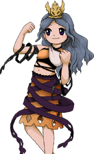

Título: Touhou Genkai Kyoukai ~ Mystic Boundary of Gensokyo
Desenvolvedora: Team Shanghai Alice
Criador: ZUN
Data de lançamento: Desconhecido
Plataforma: PC (Windows)
Gênero: Shoot 'em up (danmaku / bullet hell)
Descrição:
Touhou 20 seria o vigésimo jogo principal da série Touhou.
A história gira em torno de distorções nas fronteiras de
Gensokyo, fazendo com que diferentes mundos comecem a
se sobrepor e criar fenômenos estranhos.
Estranhas fissuras começam a aparecer em várias regiões de Gensokyo. Essas rachaduras parecem conectar o mundo humano, o Makai, o Submundo e outros lugares desconhecidos.
Criaturas e energias de diferentes dimensões passam a atravessar essas fronteiras, causando confusão entre humanos e youkais.
Reimu Hakurei e Marisa Kirisame partem para investigar o fenômeno, acreditando que alguém está manipulando os limites entre os mundos.
Durante a jornada, elas encontram uma misteriosa entidade que afirma estar tentando restaurar o equilíbrio das fronteiras, mas seus métodos acabam criando um grande incidente em Gensokyo.
O jogo introduziria um novo sistema envolvendo “fragmentos de fronteira”, que permitem alterar padrões de ataque e criar efeitos especiais durante as batalhas.
Reimu Hakurei (sacerdotisa do Santuário Hakurei)
Marisa Kirisame (maga humana)
Sanae Kochiya (sacerdotisa do Santuário Moriya)
Youmu Konpaku (jardineira do Submundo)
Cada personagem possuiria diferentes habilidades relacionadas às fronteiras entre os mundos, mudando a forma de enfrentar os inimigos durante a campanha.
